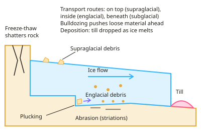

GCSE Geography · Topic 7
Glaciated landscapes of the UK
Glaciated landscapes of the U K are the dramatic upland areas shaped by ice during the last ice age.
We will study glacial processes, from freeze thaw weathering to plucking and abrasion.
Then we explain landforms of glacial erosion and deposition, and use the Lake District as a case study of land use and tourism.
- 4 subtopics
- 178 questions
- Free: 7.1 notes and 10 questions
In this topic
- 7.1Glacial processes: freeze-thaw, plucking, abrasion, transport and depositionFree below · 42 questions
- 7.2Landforms of glacial erosion: corries, arêtes, pyramidal peaks, glacial troughs, truncated spurs and ribbon lakesOpen in Full Marks · 39 questions
- 7.3Landforms of glacial deposition: moraines, drumlins and erraticsOpen in Full Marks · 49 questions
- 7.4Glaciated upland case study (Lake District): land uses, tourism opportunities, conflicts and management strategiesOpen in Full Marks · 48 questions
7.1 · Free notes
Glacial processes: freeze-thaw, plucking, abrasion, transport and deposition

Key points
- Britain's glaciated uplands (Lake District, Snowdonia, Scottish Highlands) were shaped in the last glacial period. Ice sheets and valley glaciers retreated about 11,700 years ago, so today's landforms are relict features of glaciation.
- Glacier movement: gravity pulls ice downhill. It slides on a thin film of meltwater at the base (basal sliding), and in corrie hollows it moves by rotational slip. Speeds are typically centimetres to a few metres per day.
- Freeze-thaw weathering is weathering, not erosion. Water enters cracks by day, freezes at night at 0°C and expands by about 9%. This puts pressure on the rock, so repeated cycles widen the cracks and angular fragments break off. It needs temperatures that cross 0°C and jointed, exposed rock.
- Plucking (erosion): meltwater freezes the glacier onto jointed bedrock, and as the ice moves it pulls away blocks of rock. It is strongest at corrie backwalls and on the downstream side of rock outcrops, and it leaves a rough, jagged surface.
- Abrasion (erosion): rock fragments embedded in the base and sides of the ice scrape the bedrock like sandpaper. This polishes the rock and leaves parallel scratches called striations, which show the direction of ice flow. Abrasion deepens and widens valleys.
- Bulldozing (a form of transport): the advancing glacier pushes loose rock, soil and debris ahead of it. This is how it moves unconsolidated material and clears valley floors.
- Transport routes: supraglacial (on the ice surface, mainly frost-shattered debris), englacial (within the ice) and subglacial (at the base, which fuels abrasion). Debris is angular because it has not been rounded by water.
- Deposition: when the ice melts (the climate warms or the glacier reaches lower, warmer ground) it loses the energy to carry its load and drops it. This material is till, which is unsorted, angular and of mixed sizes. It forms moraines, drumlins and erratics.
- Do not confuse till with fluvioglacial deposits. Meltwater streams sort, round and layer sediment (for example outwash plains), whereas till is dropped directly by ice with no sorting.
- Calculation tip: speed = distance ÷ time, and give units. For example, 0.3 m/day × 365 days ≈ 110 m per year. In 'explain' answers, give the process in sequence: water, freezing, expansion, pressure, fragments.
- Exam terms to use: erosion (plucking, abrasion) shapes the land; weathering (freeze-thaw) supplies debris; transport (bulldozing, supraglacial, englacial, subglacial) moves it; deposition (till) leaves it. Always link each process to the landform it creates.
In more detail
- Ice extent: at its maximum, about 20 000 years ago, ice covered most of Britain north of a line from roughly the Bristol Channel to the Wash.
- Freeze–thaw: water expands by about 9% when it freezes, widening cracks until rock breaks off as scree.
- Rotational slip: in a corrie, ice moves in a curved path, deepening the hollow.
- Worked speed: a glacier moving 0.5 m a day travels 0.5 × 365 ≈ 183 m a year.
- Till vs outwash: till is unsorted and angular, dropped straight from the ice; outwash is sorted and rounded by meltwater.
Practice
Glacial processes: freeze-thaw, plucking, abrasion, transport and deposition: 10 questions
Pick an answer to check it, or open the answer for the explanation.
1. By roughly how much does water expand in volume when it freezes in a rock crack?
- 1%
- 9%
- 30%
- 90%
Show answer
B: 9%. Water expands by about 9% on freezing at 0°C, pressing on the crack walls. Repeated freeze-thaw cycles widen the crack until angular fragments break off.
2. What is the name for glacial erosion in which ice freezes onto bedrock and pulls fragments away as it moves?
- Freeze-thaw
- Plucking
- Bulldozing
- Abrasion
Show answer
B: Plucking. Plucking happens when meltwater freezes the ice onto jointed rock and the moving glacier tears blocks away, leaving a jagged surface.
3. Parallel scratches called striations on a rock surface are evidence of which process?
- Plucking
- Freeze-thaw weathering
- Abrasion
- Rotational slip
Show answer
C: Abrasion. Rock fragments in the base of the ice act like sandpaper, scratching and polishing the bedrock. The striations show the direction of ice flow.
4. Which conditions are most likely to cause frequent freeze-thaw weathering?
- Temperatures above 10°C on sandy soil
- Temperatures crossing 0°C daily on cracked, wet rock
- Constant 5°C on cracked rock
- Constant –10°C on solid, crack-free rock
Show answer
B: Temperatures crossing 0°C daily on cracked, wet rock. Freeze-thaw needs water in cracks and temperatures that repeatedly rise above and fall below 0°C. Constant temperatures or unjointed rock give few cycles.
5. A glacier moves 30 cm per day. Approximately how far does it travel in one year (365 days)?
- 11 m
- 110 m
- 1,100 m
- 30 m
Show answer
B: 110 m. 30 cm = 0.3 m. Distance = speed × time = 0.3 m/day × 365 days = 109.5 m, which is about 110 m.
6. Debris carried inside the body of a glacier is described as:
- Englacial
- Supraglacial
- Subglacial
- Fluvioglacial
Show answer
A: Englacial. Englacial material is carried within the ice. Supraglacial is on top, subglacial is at the base, and fluvioglacial involves meltwater.
7. Which description fits till?
- Sorted layers of rounded gravel laid down by meltwater
- Unsorted, angular material of mixed sizes dropped directly by ice
- Fine silt settled in a lake
- Boulders of a single rock type only
Show answer
B: Unsorted, angular material of mixed sizes dropped directly by ice. Till is deposited directly by ice, so it is unsorted and angular with mixed sizes. Water-laid fluvioglacial deposits are sorted and rounded.
8. The ice sheets of the last glacial period retreated from the UK about:
- 11,700 years ago
- 1 million years ago
- 1,000 years ago
- 100 million years ago
Show answer
A: 11,700 years ago. The last glacial period ended roughly 11,700 years ago. Many UK upland landforms were shaped by ice before then.
9. Where is plucking most effective?
- On the upper surface of the glacier
- On smooth, unjointed rock beneath thin ice
- Where meltwater deposits sorted gravel
- On the downstream side of bedrock bumps, where ice freezes into jointed rock
Show answer
D: On the downstream side of bedrock bumps, where ice freezes into jointed rock. Plucking needs ice frozen onto jointed or fractured rock. The downstream side of outcrops and corrie backwalls are typical places.
10. Which statement about abrasion is correct?
- It is weathering caused by expanding water
- It only happens when the ice melts
- It needs rock fragments embedded in the base and sides of the ice
- It pulls large blocks from the corrie backwall
Show answer
C: It needs rock fragments embedded in the base and sides of the ice. Abrasion is erosion by debris held in the ice grinding the bedrock. Pulling off blocks is plucking, and expanding water is freeze-thaw.
Keep going in Full Marks
Full Marks has 42 questions on Glacial processes: freeze-thaw, plucking, abrasion, transport and deposition (32 more than here), set out in practice levels. You also get notes and 3D models for all 4 subtopics of Glaciated landscapes of the UK, plus games, timed exams and past papers.
On your exam board
Not in the OCR A, OCR B and Cambridge specifications.